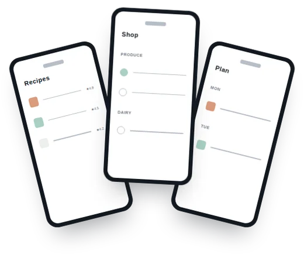
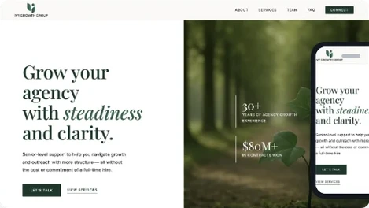
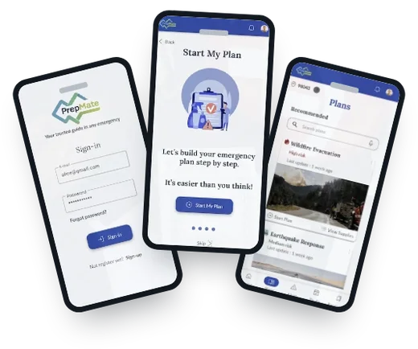
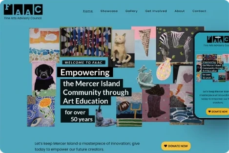

Work
All Work
Every project I've designed, from early explorations to shipped products.

01
No Fuss Meal Plan
UX Research, Case Study
A streamlined meal-planning experience for busy users — from quick onboarding to weekly plans and grocery-ready lists — designed to reduce decision fatigue and keep healthy eating realistic.

02
Ivy Growth Group
Heuristic Review
A heuristic evaluation of the Ivy Growth Group marketing site against Nielsen's usability heuristics, surfacing fixes to navigation feedback, form validation, and error recovery.

03
PrepMate
UX/UI Designer, Case Study
A mobile app that turns emergency preparedness from a daunting, fear-driven task into a structured, achievable process — guiding people through a personalized plan instead of a generic checklist.

04
FAAC
Web Design
A website redesign for the Fine Arts Advisory Council that replaces a cluttered, unresponsive layout with streamlined navigation and clear calls to action — making it effortless for parents, teachers, donors, and volunteers to get involved.